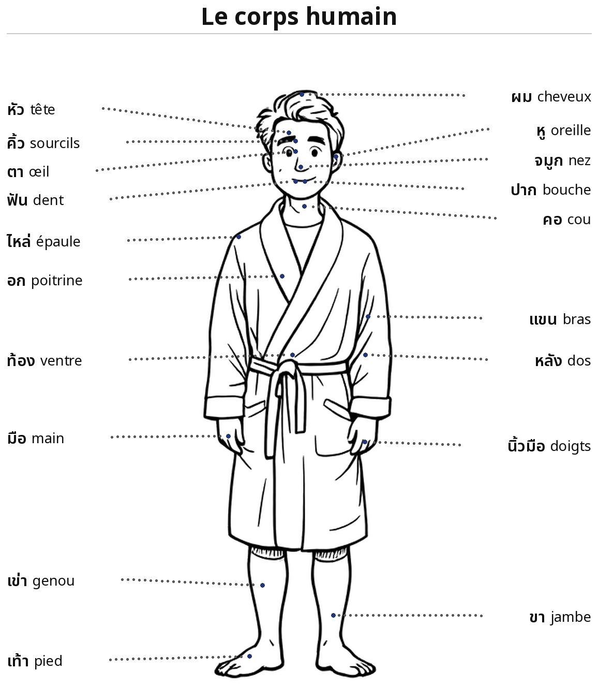

EN
Leçon 11 : J'ai mal à la tête
bòt tîi sìp əd · pǒm bpuùaad huǔaa
🎯 Faire le quiz de cette leçon →

Cliquez sur le haut-parleur pour entendre la prononciation
Vocabulaire – Les parties du corps
ภาษาไทย
Prononciation
Français
Vocabulaire – La maladie
(p. 42)
ภาษาไทย
Prononciation
Français
Grammaire : waiyaagon
Sujet
Verbe
Objet
pǒm
bpuùaad
huǔaa
j'
ai mal
à la tête
pǒm jèb kǎa
j'ai mal aux jambes.
Sujet
Verbe
Objet
Verbe
Objet
pǒm
gin
yaa
prɔ́wâa mii
tɔóng siǐaa
je
prends
médicament
parce que j'ai
la diarrhée
pǒm jèb kǎa prɔ́wâa deen mâak
j'ai mal aux jambes car j'ai beaucoup marché.